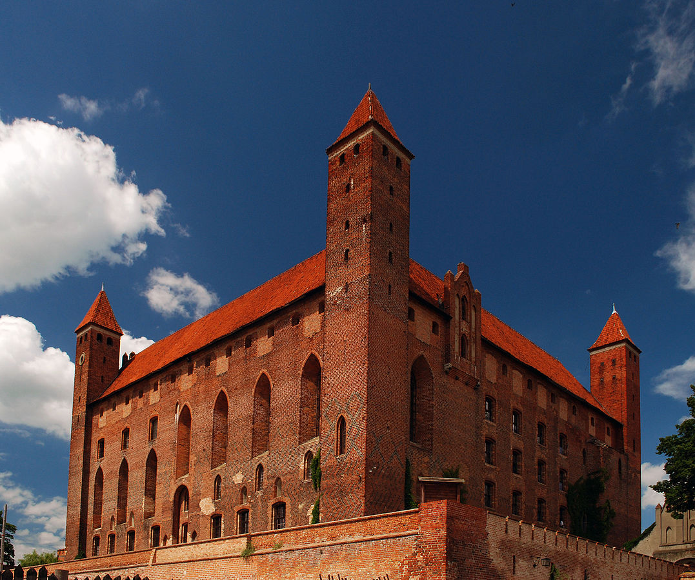
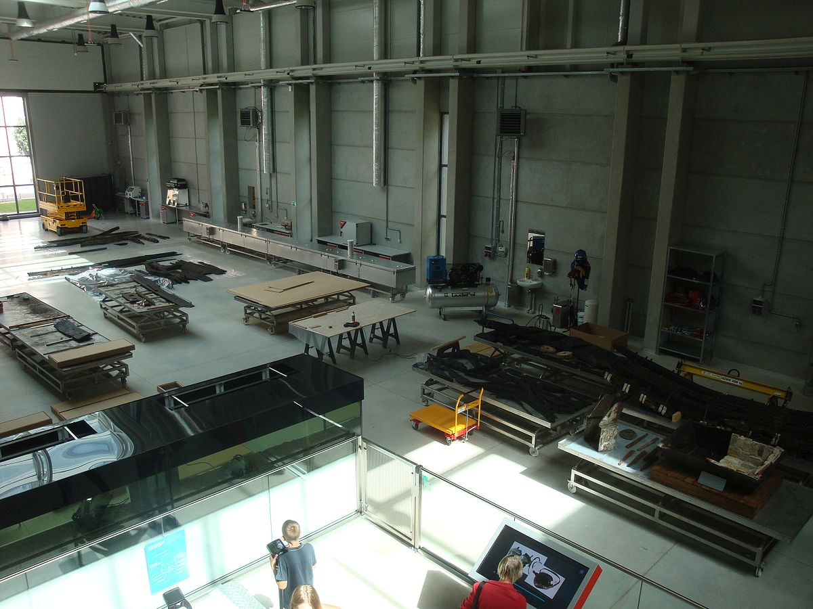
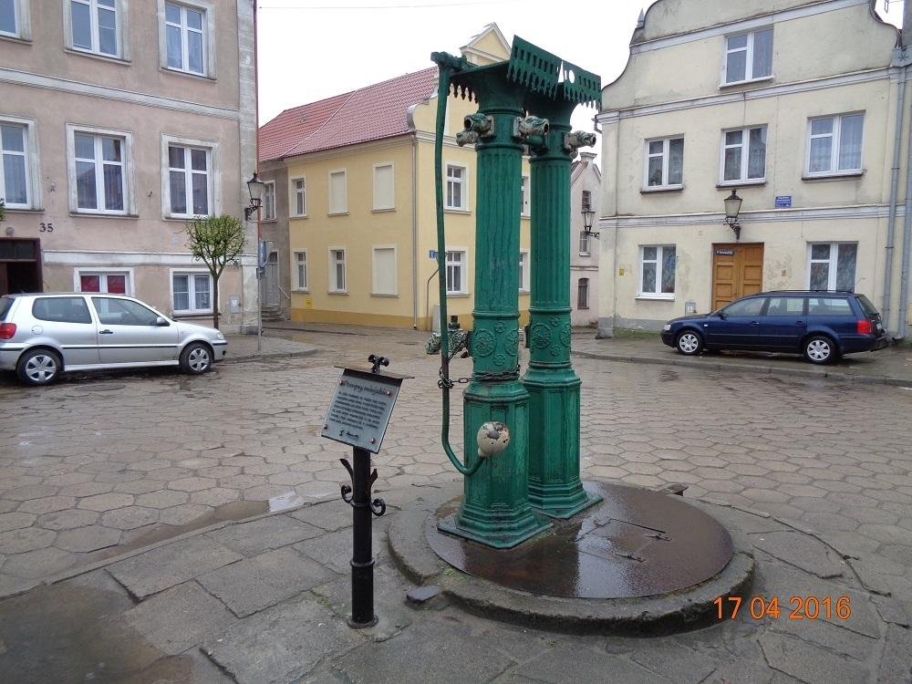

Dane o powiecie
| Siedziba | Tczew |
| Powierzchnia | 697 km² |
| Populacja | 115 581 |
Dane kontaktowe starostwa powiatowego
| Telefon | +48 (58) 77 34 800 |
| Adres | ul. Piaskowa 2 83-110 Tczew |
| Strona | powiat.tczew.pl |
Atrakcje turystyczne
Zamek w Gniewie
Usytuowany na wzgórzu nad Wisłą zamek Gniew wraz z kompleksem zabudowań stanowi wyjątkowy mariaż pięknych wnętrz i atmosfery rycerskich biesiad. Malownicze, wręcz sielskie widoki sprawiają, że pobyt w Gniewie pozostawia w każdej duszy niezapomniane wrażenia.
Źródło: polskieszlaki.plCentrum Konserwacji Wraków Statków
Muzeum składa się z dwóch głównych części: pracowni konserwatorskiej oraz magazynu studyjnego. Eksponaty opisane są po polsku i po angielsku[6]. Na ustawionych w przestrzeni dla zwiedzających interaktywnych panelach oraz przy pomocy aplikacji mobilnej można uzyskać więcej informacji o znalezionych przedmiotach[
Źródło: wikipedia.orgPompa miejska w Gniewie
Na Rynku w Gniewie, tuż przy Ratuszu, stoi zabytkowa żeliwna pompa miejska. Jej historia prawdopodobnie sięga początków miasta, gdy istniały tu dwie studnie. Jedna stała przed Ratuszem, a druga, którą można oglądać do dziś, znajduje się w południowej części Rynku. Pompa pochodzi z 1873 roku.
Źródło: polskieszlaki.pl